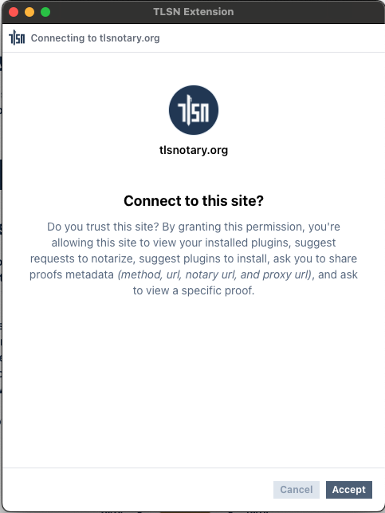
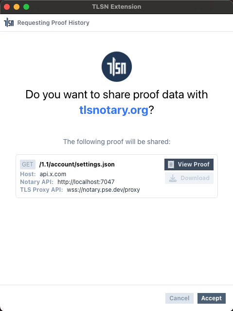
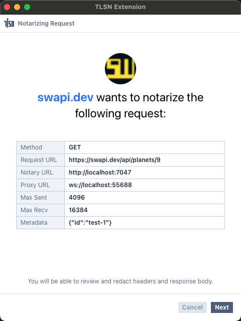

TLSN Extension's Provider API
This page is a reference for the TLSN Extension's Provider API. This API can be used in web pages to request attestation history, notarize requests, manage plugins, and more from the TLSN extension.
The TLSN Extension injects a provider API into websites visited by its users using the window.tlsn provider object. This allows webpages to connect to the TLSN Extension and query TLSN attestations, with the user's permission, of course.
Connect to TLSN Extension
tlsn.connect()
This method is used to request a connection between the website and the extension. Once connected, the website can use the provider API to request actions from the extension.
Parameters
None.
Returns
A promise that resolves to the full provider API object.
Example
const client = await tlsn.connect();
Screenshot

Provider API Methods
client.getHistory(method, url, metadata)
This method is used to request attestation history from the extension.
Parameters
method: A glob pattern matching the request method of the proof. (e.g.,get,{get,post},*)url: A glob pattern matching the request URL of the proof. (e.g.,**,https://swapi.dev/**)metadata: An object containing glob patterns that match metadata about the request. (e.g.,{id: "swapi-proof-1"})
Returns
A promise that resolves to an array of proof header data.
type ProofHeader = {
id: string;
method: string;
notaryUrl: string;
time: string;
url: string;
websocketProxyUrl: string;
}
Example
const proofs = await client.getHistory('*', '**', {id: '0x1234567890'});
Screenshot

client.getProof(id)
This method is used to request the full data of a specific proof by its ID.
Parameters
id: The ID of the proof.
Returns
A promise that resolves to the proof data or null.
type ProofData = {
notaryUrl: string;
session: Session; // https://github.com/tlsnotary/tlsn-js/blob/main/src/types.ts#L7-L11;
substrings: Substrings; // https://github.com/tlsnotary/tlsn-js/blob/main/src/types.ts#L73-L76
}
Example
const proof = await client.getProof('FE512M1.72007336176400000000000000000000');
Screenshot

client.notarize(url, requestOptions, proofConfig)
This method is used to request notarization of a specific request.
Parameters
url: The URL of the request.requestOptions: An object containing the following:method:GET,POST,PUT, etc.headers: A map of headers.body: The string content of the request body.
proofConfig: An object containing the following:notaryUrl: URL of the notary (defaults to the extension's setting).websocketProxyUrl: URL of the websocket proxy (defaults to the extension's setting).maxSentData: Maximum allowed sent data (defaults to the extension's setting).maxRecvData: Maximum allowed received data (defaults to the extension's setting).maxTranscriptSize: Maximum allowed transcript size (defaults to the extension's setting).metadata: An object containing metadata.
Returns
A promise that resolves to the proof data.
type ProofData = {
notaryUrl: string;
session: Session; // https://github.com/tlsnotary/tlsn-js/blob/main/src/types.ts#L7-L11;
substrings: Substrings; // https://github.com/tlsnotary/tlsn-js/blob/main/src/types.ts#L73-L76
}
Example
const proof = await client.notarize(
'https://swapi.dev/api/planets/9',
{
method: 'get',
headers: {
"Accept": "application/json",
"Accept-Encoding": "identity",
"Connection": "close",
"Cookie": "csrftoken=blahblahblah",
}
},
{
metadata: {id: 'test-1'},
}
);
Screenshot

client.installPlugin(url, metadata)
This method is used to request the installation of a plugin.
Parameters
url: The URL to the plugin's WASM file.metadata: An object containing metadata about the plugin.
Returns
A promise that resolves to the plugin ID.
Example
const pluginId = await client.installPlugin(
'https://github.com/tlsnotary/tlsn-extension/raw/main/plugins/twitter_profile/index.wasm',
{ id: 'demo-plugin-1' }
);
Screenshot

client.getPlugins(url, origin, metadata)
This method is used to query installed plugins.
Parameters
url: A glob pattern matching the URL to the plugin's WASM file.origin: A glob pattern matching the origin requesting the plugin installation.metadata: An object containing glob patterns matching metadata about the plugin.
Returns
A promise that resolves to the plugin configuration.
type PluginConfig = {
hash: string;
title: string;
description: string;
icon?: string;
steps?: StepConfig[];
hostFunctions?: string[];
cookies?: string[];
headers?: string[];
requests: { method: string; url: string }[];
notaryUrls?: string[];
proxyUrls?: string[];
};
Example
const plugin = await client.getPlugins('**', 'https://swapi.dev', {id: 'demo-plugin-1'});
Screenshot

client.runPlugin(id)
This method is used to request the execution of a plugin.
Parameters
id: The ID of the plugin.
Returns
A promise that resolves to the proof data.
type ProofData = {
notaryUrl: string;
session: Session; // https://github.com/tlsnotary/tlsn-js/blob/main/src/types.ts#L7-L11;
substrings: Substrings; // https://github.com/tlsnotary/tlsn-js/blob/main/src/types.ts#L73-L76
}
Example
const plugin = await client.runPlugin("6931d2ad63340d3a1fb1a5c1e3f4454c5a518164d6de5ad272e744832355ee02");
Screenshot